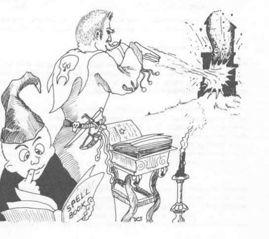

智力 · Intelligence
智力 Intelligence。智力与今日所谓的智商颇为相似，但也包括书面测试之外的记忆、推理和学习能力。智力决定角色能够交谈的语言数量。* 智力也是魔法师的专长，因为他们必须头脑敏锐，才能正确理解魔法并记忆法术。因此，智力是魔法师的主属性；智力达到 16 或以上者，所得经验值获得 10% 加值。智力较低的魔法师无法学习 4 环以上法术；智力也决定角色可知法术的数量及可知法术的环级，只有最高的智力才能理解 9 环法术中的强大魔法。下列表格便于掌握智力对所有角色，尤其是魔法师的影响。
*非人角色通常会说比人类更多的语言，但智力同样决定其能力上限，且还受种族限制。（见“角色种族”。）
智力表 I Intelligence Table I
| 属性值 | 一般信息 | 额外语言数量 |
|---|---|---|
| 3 | 0 | |
| 4 | 半精灵角色的最低智力 | 0 |
| 5 | 等于或低于此值时，角色只能成为战士 | 0 |
| 6 | 半身人角色的最低智力 | 0 |
| 7 | 侏儒角色的最低智力 | 0 |
| 8 | 精灵角色的最低智力 | 1 |
| 9 | 圣武士或魔法师角色的最低智力 | 1 |
| 10 | 使用 5 环魔法师法术的最低智力 | 2 |
| 11 | 刺客角色的最低智力 | 2 |
| 12 | 使用 6 环魔法师法术的最低智力 | 3 |
| 13 | 巡林客角色的最低智力 | 3 |
| 14 | 使用 7 环魔法师法术的最低智力 | 4 |
| 15 | 幻术师角色的最低智力 | 4 |
| 16 | 使用 8 环魔法师法术的最低智力 | 5 |
| 17 | 半兽人角色的最高智力 | 6 |
| 18 | 使用 9 环魔法师法术的最低智力 | 7 |
智力表 II：魔法师能力 Intelligence Table II.: Ability For Magic-Users
| 属性值 | 习得每项所列法术的概率 | 每环最低法术数 | 每环最高法术数 |
|---|---|---|---|
| 9 | 35% | 4 | 6 |
| 10–12 | 45% | 5 | 7 |
| 13–14 | 55% | 6 | 9 |
| 15–16 | 65% | 7 | 11 |
| 17 | 75% | 8 | 14 |
| 18 | 85% | 9 | 18 |
| 19 或以上 | 95% | 10 | 全部 |
智力表 II 注释 Notes Regarding Intelligence Table II。
每名魔法师都必须用本表确定自己能学习每一环级中的哪些法术，以及能学多少。起初只检查 1 环法术；只有角色达到可以使用相应法术环级的等级时，才检查之后的法术组。
习得每项所列法术的概率 Chance to Know Each Listed Spell。是角色凭其智力学习该环级中任一特定法术的百分比机会。角色可按任意顺序选择想要的法术；每个法术只能检查一次。掷百分骰，结果若小于或等于所列百分比，角色便能学习并知晓该法术（可记录在法术书中，后文说明）。例：智力 12 的角色想学习在书本或卷轴中发现的“魅惑人类”，百分骰掷出 52，故未能理解，不能使用（但参见下文关于最低可知法术数的段落）。
每环最低法术数 Minimum Number of Spells/Level。表示魔法师在某一法术环级至少能学会多少法术。若完整检查该组所有法术后，所得数量未达到智力对应的最低值，角色可以有选择地重新检查未学会的法术，每项再检查一次；持续如此，直到满足最低数。这意味着某些法术一旦找到便能学会，另一些则永远无法学会；骰子决定各自属于哪一类。例：上文未学会“魅惑人类”的魔法师也未达到最低数量，于是重新查看 1 环法术列表，再次选择检查“魅惑人类”，掷出 04，获得了学习能力。日后找到该法术时，便可以学会。
每环最高法术数 Maximum Number of Spells/Level。是最低数的另一面。依智力不同，魔法师可能知道——写在法术书中——的最高数量从 6 个到无限不等。一旦达到最高数，就不能再检查该环级的其他法术。
智力变化 Change in Intelligence。若智力因任何原因升降，且变化较为持久，魔法师必须按上述方法重新检查各环级已知法术。
取得先前未知的法术 Acquisition of Heretofore Unknown Spells。魔法师在首次完整检查某环级全部法术后，或在连续检查达到最低可知法术数后，必须立即停止检查；但只要不超过最高可知法术数，仍可取得先前未知的额外法术。新法术可来自缴获或以其他方式获得的法术书，也可来自魔法卷轴；后一种情况下，卷轴会在学习并掌握新法术时被销毁。（本主题在魔法师职业一节有更完整说明。）
